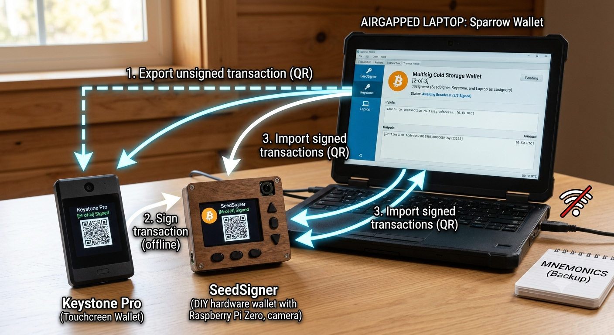

최종 종착지는 멀티시그라는 결론이 나왔다.

1. 왜 멀티시그냐
최근 콜드카드 사태로 더욱 부각됐다. 시드 생성, 펌웨어 업데이트, 트랜잭션 검증, 와치온리(코디네이터)까지 전부 공격면이 될 수 있다.
그럼 콜드월렛 제작사를 믿지 말고, 에어갭 노트북을 직접 만들어서 콜드월렛으로 쓰면 안전한가?
그렇지 않다. 문제는 공격표면의 크기다. 범용 OS의 버그 때문에 여전히 불안감이 남는다. 결국 기기가 외부에서 온 데이터를 처리(파싱)하는 코드가 얼마나 많으냐의 문제다.
2. 정리하자면
- 콜드카드 등 제조사의 서명기기 — 시드 생성 과정의 엔트로피가 실패지점이 됨이 검증됐다.
- 시드사이너 등 오픈소스 하드웨어 — 유통 단계에서 변조된 보드, 바꿔치기된 부품, 노출된 디버그 경로가 공격 벡터가 될 수 있다.
- 직접 만든 에어갭 노트북 — 범용 OS라 공격표면이 크다.
셋 다 100% 신뢰할 수는 없다.
3. 그나마 최선
주사위를 굴려 직접 짱짱한 엔트로피로 시드를 만들고, 패스프레이즈를 설정하고, 트랜잭션을 하드웨어 월렛의 독립 화면으로 직접 눈으로 확인하고, 한 번 더 이 홈페이지의 PSBT 잔돈(output) 검증기를 쓴다.
확인할 내용은 input, output, 금액, change, 수수료다. 이러면 대다수의 위험은 피할 수 있다.
'대다수'는.
하지만 다크스키피 등, 100% 안전한 건 아니다.
4. 그래서, 멀티시그
답은 멀티시그다. 한 제조사의 실수, 한 배포 채널의 오염, 한 코드베이스의 취약점이 전체 자산을 동시에 노출시키지 못하게 해야 한다. 서로 다른 공급망을 가진 장치를 섞는 거다.
예를 들면, 시드를 키스톤에서 하나, 시드사이너에서 하나, 에어갭 노트북에서 하나 생성해 2-of-3 멀티시그를 구현하는 식이다.
5. 그래도 초보자에겐 추천 못 한다
그렇다고 초보자에게 멀티시그를 추천할 순 없는 노릇이니 난감할 따름이다.
셀프커스터디를 처음 알았다면 일단은 주사위 100번 굴려 니모닉 만들기. 이후 트랜잭션을 좀 일으켜 보고, 여유가 있을 때 패스프레이즈. 패스프레이즈까지 하고 나서도 돈을 잃을 불안감이 생기면, 그때 최종적으로 멀티시그로 넘어가면 된다.
셀프커스터디를 시작하면서부터 멀티시그를 했다간, 자신의 실수로 돈을 잃을 가능성이 너무 높다. (휴먼에러)